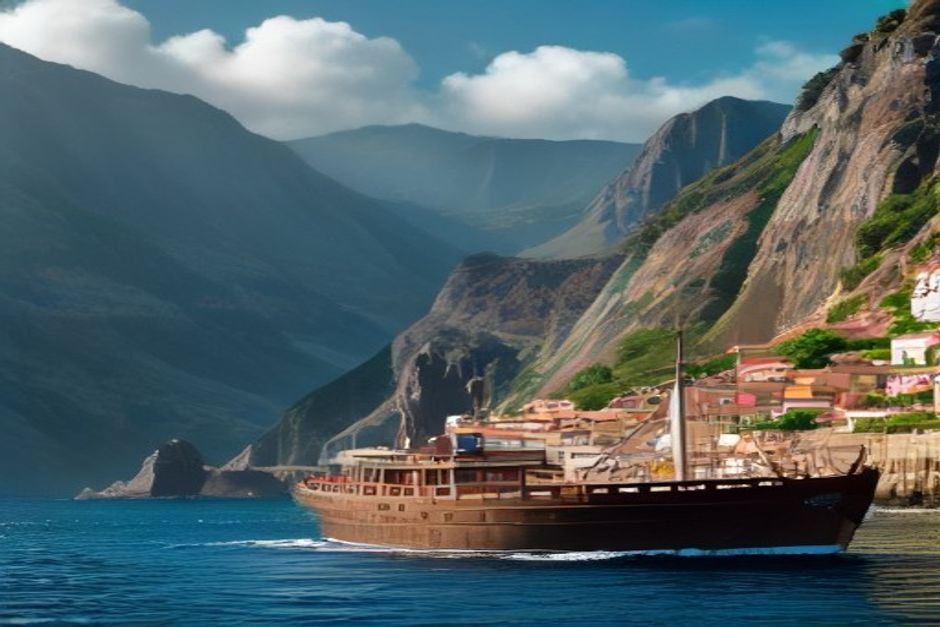
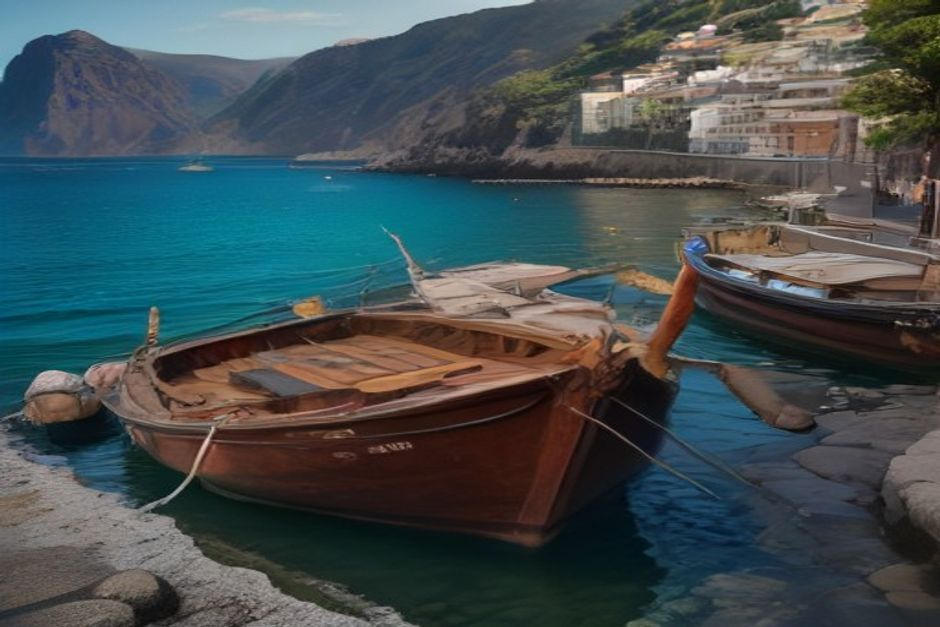

Câmara de Lobos is the first place any boat out of Funchal actually passes — a working fishing harbour nine kilometres west of the marina, painted boats stacked against a wall of cliff. Most visitors know it from a single Churchill anecdote and keep driving. Here's what the village is actually worth stopping for.
Where is Câmara de Lobos, and how do you get there?
Câmara de Lobos sits on Madeira's south coast, about 9 kilometres — a 15-minute drive — west of Funchal, reached by the VE4 expressway or the older coastal road that drops down into the village itself. By sea it's closer still: the first landmark any boat meets heading west out of Marina do Funchal, well before the cliffs of Cabo Girão come into view. The harbour sits directly below the expressway, so the village reads as a working port first and a viewpoint second — most of the photogenic angles are from the water or from the cliffside road above.

Why is it called Câmara de Lobos?
The name translates as "den of wolves," and it has nothing to do with actual wolves. When the explorer João Gonçalves Zarco landed here in 1420 during Madeira's discovery, he found monk seals hauled out on the rocks and mistook them for sea wolves — the name stuck to the bay ever since. Zarco used Câmara de Lobos as his first base on the island, from 1420 to 1424, before Funchal itself was properly settled, which makes this one of the oldest continuously inhabited places on Madeira.
What is Câmara de Lobos actually known for?
Fishing, above all — specifically for espada, the black scabbardfish that Madeira's deep-water fleet hauls up from hundreds of metres down. The harbour is still lined with small, brightly painted wooden boats used for exactly that, which is what gives the bay its postcard look: whitewashed houses stacked up the hillside, terraced vineyards climbing behind them, and a wall of cliff closing the scene on one side. It's a working village rather than a resort, which is part of why it photographs so well — nothing here was built for the view.
Why did Winston Churchill paint here?
On 8 January 1950, during a stay at Reid's Palace in Funchal, Churchill travelled to Câmara de Lobos, set up his easel at the entrance to the village, and painted the bay — the fishing boats, the whitewashed houses, the cliffs behind. It's one of roughly 500 paintings he made in his lifetime, and one of the better-known ones from his later years. The spot where he worked is now marked and named the Miradouro Winston Churchill, a short walk above the harbour with the same view he painted still largely intact.

Is Câmara de Lobos really the birthplace of poncha?
It's the village most commonly credited with it. Poncha — sugarcane spirit, honey and lemon, beaten together rather than shaken — is claimed by Câmara de Lobos as its home, and the harbour front is still lined with small, no-frills poncha bars where it's made the traditional way, muddled by hand with a wooden caralhinho. Whether or not the village invented the drink outright, it's as close to a working definition of a poncha bar as Madeira has.
Can you swim in Câmara de Lobos?
Not really, and that's fine — the main bay is a working harbour packed with fishing boats and mooring lines, not a swimming spot. There's no beach to speak of here; the appeal is the boats, the cliffs and the history, not the water. On Chifbay's route, Câmara de Lobos is the opening view rather than a swim stop — the swimming happens further along the coast, at Fajã dos Padres and Ribeira Brava, once the boat has cleared Cabo Girão.
Is Câmara de Lobos included on a boat trip from Funchal?
Yes — it's the first thing you see on Chifbay's private Day Trip out of Marina do Funchal, before the drone shot at Cabo Girão and the swim stops at Fajã dos Padres and Ribeira Brava that follow. Passing the harbour by boat gives you almost the same angle Churchill painted from, just approached from the water instead of the cliff road — the colour of the boats and the scale of the cliff behind them read differently from sea level than they do from a car window.
When is the best time to visit?
Any time of year works, since the village doesn't depend on weather or season the way a beach does — the boats, the harbour and the poncha bars are there year-round. Late afternoon gives the cliffs behind the village their best light, which is also roughly when Chifbay's boats pass through on the way out to Cabo Girão and the coves beyond.
Most people who visit Câmara de Lobos know one fact about it — that Churchill painted here — and leave without noticing the rest. It's older than Funchal, gave Madeira its national drink, and still fishes the same way it did a century ago.
Whether you stop on the cliff road or pass it by sea, Câmara de Lobos is worth more than the five minutes most itineraries give it — a working harbour that happens to have hosted a prime minister with a paintbrush.